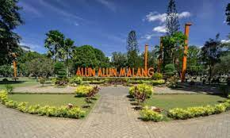
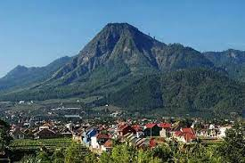
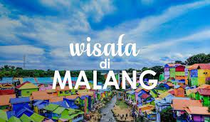

Malang
Kota malang yang di julukikota apel, terletak di iprovinsi jawa timur
Sejarah

Malang merupakan sebuah kerajaan yang berpusat di wilayah Dinoyo, dengan Raja Gajayana. Tahun 1882 rumah-rumah di bagian barat kota didirikan dan kota didirikan alun-alun dibangun. 2 Maret 1947 Pemerintah Republik Indonesia kembali memasuki Kota Malang
Julukan Malang Kota Bunga erat kaitannya dengan banyaknya taman dan ragam pepohonan yang menghiasi Kota Malang. Hal ini tidak lepas dari konsep rancangan kota taman yang diwariskan Thomas Karsten
Geografis

Letaknya yang berada ditengah-tengah wilayah Kabupaten Malang secara astronomis terletak 112,06° – 112,07° Bujur Timur dan 7,06° – 8,02° Lintang Selatan, dengan batas wilayah sebagai berikut : Sebelah Utara Kecamatan Singosari dan Kec. Karangploso Kabupaten Malang.
Wisata yang ada di malang

ada banyak sekali destinasi wisata di malang di antaranya :
- Alun alun Kota malang : Alun-Alun Kota Malang adalah salah satu taman kota yang berada di Kota Malang. Wisata ini merupakan tempat wisata yang ramai akan wisatawan
- Gunung Bromo : Gunung Bromo adalah salah satu gunung api yang masih aktif di Indonesia. Gunung yang memiliki ketinggian 2.392 meter di atas permukaan laut ini merupakan destinasi andalan Jawa Timur.
- Selecta : Nama Selecta sendiri berasal dari bahasa Belanda, yang mempunyai arti pilihan. Dengan nama ini setidaknya tempat rekreasi yang satu ini menjadi salah satu tempat pilihan yang tepat untuk Anda ketika berwista ke kota Batu. Selecta merupakan sebuah obyek wisata yang sangat tepat untuk Anda beserta keluarga.
- Coban Rondo : Coban merupakan kata lain dari air terjun. Sementara rondo berarti janda. Karena namanya itu, air terjun yang ada di Kecamatan Pujon, Kabupaten Malang itu sarat dengan legenda yang berkembang di tengah masyarakat setempat.
- Air terjun Tumpak Sewu : Air terjun ini dinamakan Tumpak Sewu karena memiliki banyak sumber mata air. Ketinggiannya mencapai 120 meter. Air Terjun Tumpak Sewu menyuguhkan keindahan yang tiada tara. Formasinya terbilang unik, karena memiliki aliran air yang melebar seperti tirai.
Demikian sekilas informasi tentang Kota Malang, Jawa Timur.